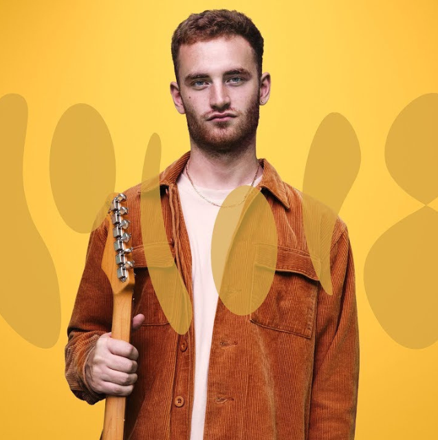

Biographie Personnelle
Thomas Abraham Misch est né en 1995 à Londres. Dès ses 4 ans, Tom s'intéresse à la musique, il commence par le violon grâce à la méthode Suzuki. Il a étudié la musique à la Langley Park School for Boys. Adolescent, il découvre la guitare grâce aux groupes Nirvana et Red Hot Chili Peppers. S’ajoute à cela la découverte du Hip Hop, il s'inspire alors du travail de J Dilla. En 2011, il s'inscrit sur Soundcloud et commence à publier ses premiers morceaux en 2012. Près de 200 000 adeptes sont attirés par ce mélange d’un style Jazz et Hip Hop. En 2014, il s'inscrit au département guitare jazz du Conservatoire de musique de Trinity Laban, mais il y restera peu, et cela pour se consacrer à sa propre musique.